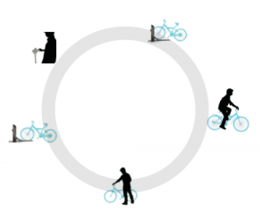

Bicycle Life Research
Bicycle life is a system that aims to avoid problems associated with busy transportation using the bicycle rent mechanism.The concept formed in the Year 2009 and after 8 years we can see the “Mo-bike”and ”ofo” emerging in the Chinese market.
Problem
Our transportation and our environment has been suffering a heavy burden recently. The user experience of public transportation is that it is usually crowded and journeys take a long time. Why not use a bicycle instead?
Uses the bicycle rent mechanism to avoid problems associated with busy transportation.
